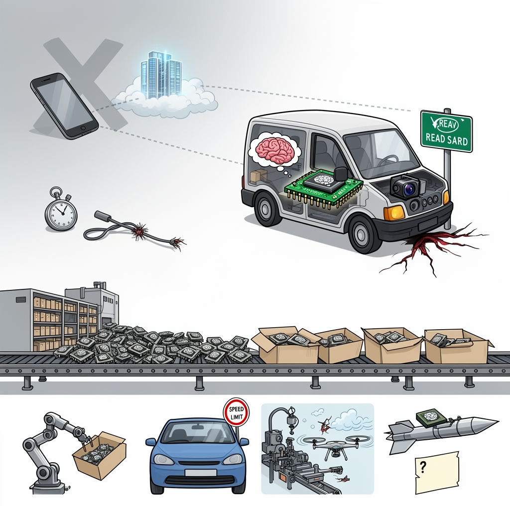

AI Panorama · fly through the GLM 5.3 edition
This page was written entirely by GLM 5.3 (Z.ai), as one of the magazine's editions - eight AI models each wrote their own version of every story from the same frozen sources.
An encyclopedia idea, explained by this edition wherever the stories leaned on it.

Most artificial intelligence that people meet day to day — chatbots, search, photo tagging — runs in datacenters: your device sends a request over the network, powerful computers answer it, and the answer travels back. Edge AI is the opposite arrangement. The model is loaded onto a small computer built into the device itself, next to the camera or microphone it works with, and all the computation happens locally. The approach makes sense when a connection is slow, unreliable or dangerous, when a decision must be made in a fraction of a second, or when the device must keep working after being cut off: a warehouse robot, a car reading road signs, a drone adjusting its flight, a factory camera spotting defects on a production line. Because the same hardware serves enormous civilian markets, capable edge-AI computers are cheap, compact and sold by the hundreds of thousands — which also means they are effectively impossible to track once they leave the factory. A weapons program that wants image recognition on board a missile can buy the same parts as any robotics startup.